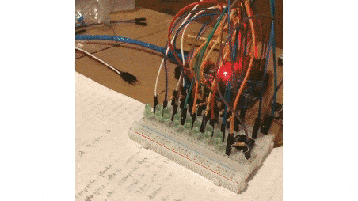

Project 0- Binary LED Counter
What it does
- Press the button to count up in binary, represented by LED pins
- Type a number in the IDE to display the binary equivalent
Intro
This is my first circuits project. I wanted to make this for several reasons:
- To practice with basic electrical components
- To get familiar with using an Arduino and the IDE
- To make something that feels like a precursor to bitwise operations and computing
Schematic
Code
int button = 2;
int LED_1 = 4;
int LED_2 = 5;
int LED_3 = 6;
int LED_4 = 7;
int LED_5 = 8;
int LED_6 = 9;
int LED_7 = 10;
int LED_8 = 11;
void setup() {
pinMode(button, INPUT);
pinMode(LED_1, OUTPUT);
pinMode(LED_2, OUTPUT);
pinMode(LED_3, OUTPUT);
pinMode(LED_4, OUTPUT);
pinMode(LED_5, OUTPUT);
pinMode(LED_6, OUTPUT);
pinMode(LED_7, OUTPUT);
pinMode(LED_8, OUTPUT);
Serial.begin(9600);
}
int count = 0;
int previous = 0;
int numLEDs = 8;
void loop() {
int max = pow(2, numLEDs);
int button_press = digitalRead(button);
//Button press reading must go from 0 to 1 to count, preventing holding
if (button_press == 1) {
if (previous == 0) {
count = (count + 1) % max;
}
}
previous = button_press;
calculateBinaryPinsGen(count, numLEDs);
}
void calculateBinaryPins(int num) {
int temp = num;
Serial.println(temp);
if (temp - pow(2, 7) >= 0) {
temp -= pow(2, 7);
digitalWrite(LED_8, 1);
} else {digitalWrite(LED_8, 0);}
if (temp - pow(2, 6) >= 0) {
temp -= pow(2, 6);
digitalWrite(LED_7, 1);
} else {digitalWrite(LED_7, 0);}
if (temp - pow(2, 5) >= 0) {
temp -= pow(2, 5);
digitalWrite(LED_6, 1);
} else {digitalWrite(LED_6, 0);}
if (temp - pow(2, 4) >= 0) {
temp -= pow(2, 4);
digitalWrite(LED_5, 1);
} else {digitalWrite(LED_5, 0);}
if (temp - pow(2, 3) >= 0) {
temp -= pow(2, 3);
digitalWrite(LED_4, 1);
} else {digitalWrite(LED_4, 0);}
if (temp - pow(2, 2) >= 0) {
temp -= pow(2, 2);
digitalWrite(LED_3, 1);
} else {digitalWrite(LED_3, 0);}
if (temp - pow(2, 1) >= 0) {
temp -= pow(2, 1);
digitalWrite(LED_2, 1);
} else {digitalWrite(LED_2, 0);}
if (temp - pow(2, 0) >= 0) {
temp -= pow(2, 0);
digitalWrite(LED_1, 1);
} else {digitalWrite(LED_1, 0);}
}
void calculateBinaryPinsGen(int num, int pins) {
//General formula based on number of pins
int LEDs[pins] = {LED_1, LED_2, LED_3, LED_4, LED_5, LED_6, LED_7, LED_8};
int temp = num;
Serial.println(temp);
for (int i = pins - 1; i >= 0; --i) {
if (temp - pow(2, i) >= 0) {
temp -= pow(2, i);
digitalWrite(LEDs[i], 1);
} else {digitalWrite(LEDs[i], 0);}
}
}